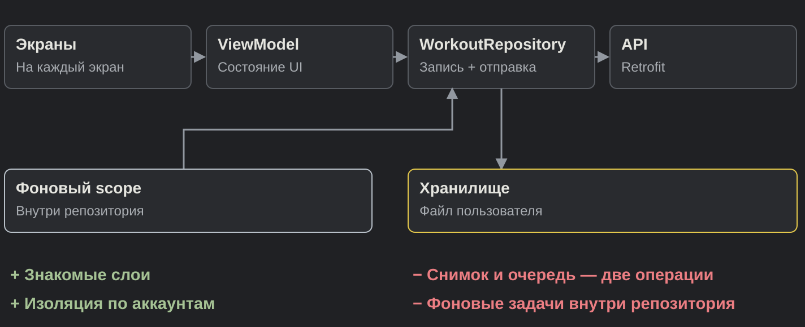
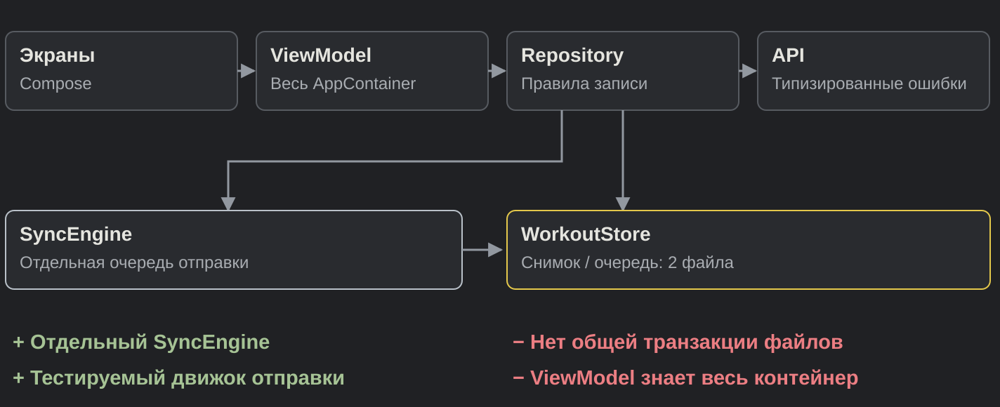
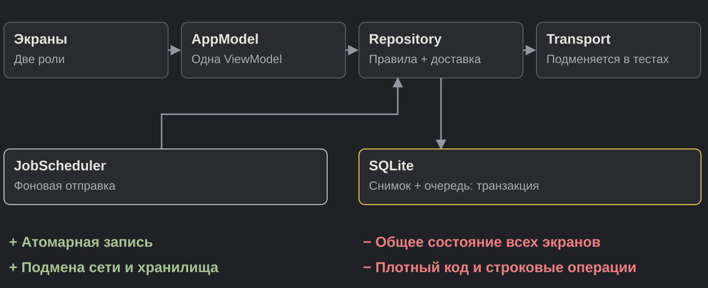
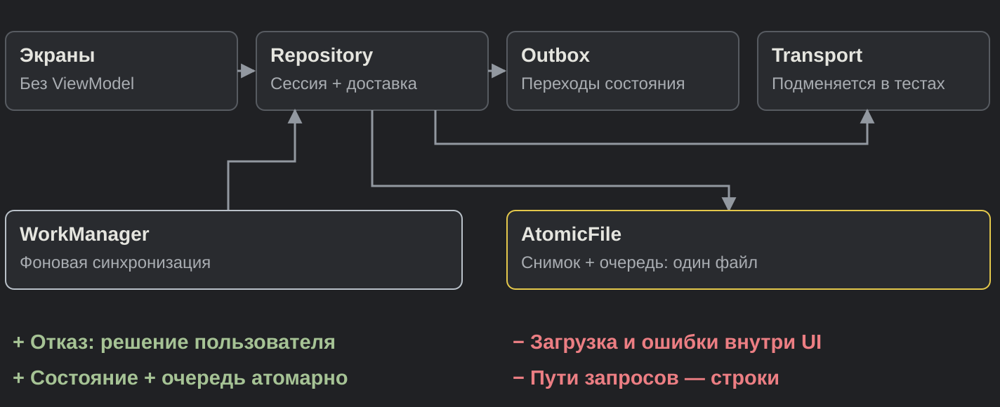
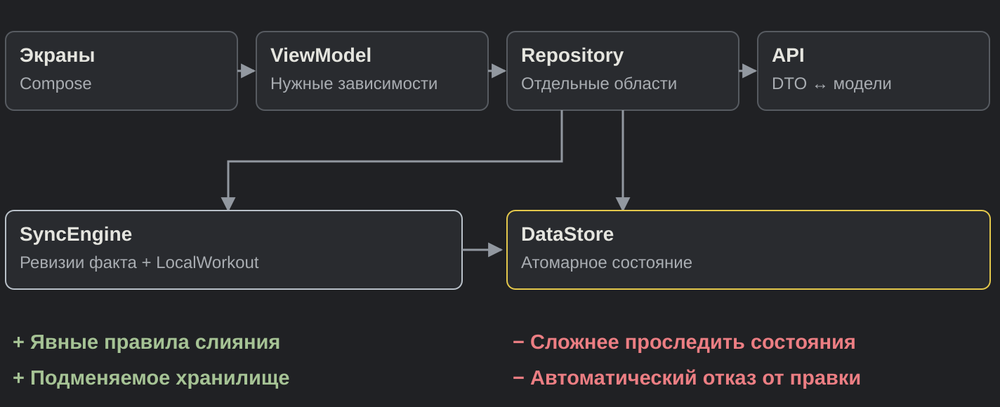

Агент,
сделай проект.
Не делай ошибок.
Пять конфигураций предъявили приложение
05разных ответов
на одно ТЗ
Пять конфигураций
Модель + харнесс = агент.
01
Antigravity
Gemini 3.8 Flash · Antigravity
02
GLM
GLM-5.3 · ZCode
03
Codex
GPT-6 Astra · Codex CLI
04
Pi
GPT-6 Astra · Pi
05
Claude
Opus 5.5 · Claude Code
03 и 04 — одна модель, два харнесса.
Стартовые условия
Чистые профили харнессов.
Без пользовательских инструкций и расширений.
Одинаковая база
ТЗ, Android starter,
данные, доступы
и бюджет работы.
Свои решения
UI, UX и архитектуру
агент проектирует сам.
Свои вопросы
Ответ получает спросивший.
Одинаковый вопрос —
одинаковый ответ.
Задача
Устройство тренера
Назначить программу
Упражнения, подходы,
вес и повторения.
План → спортсмену
CoachTrack
Общие данные.
Разные аккаунты.
Серверная синхронизация
и права доступа.
Устройство спортсмена
Провести тренировку
Записать факт, закончить
и получить обратную связь.
Результат → тренеру
Полный круг: назначил → выполнил → увидел результат.
Продуктовые требования
- Тренер создаёт программу и назначает её спортсмену.
- Спортсмен записывает подходы: вес, повторы и RPE.
- План и фактический результат хранятся раздельно.
- История и прогресс доступны тренеру и спортсмену.
Назначил → выполнил → увидел результат.
Технические требования
- Kotlin + Jetpack Compose.
- Работа через API общего готового бэкенда.
- Аккаунты и права доступа: данные пользователей изолированы.
- Сохранённая тренировка переживает перезапуск.
- Офлайн-записи отправляются после подключения без дублей.
Сохранность данных при сбоях и повторных запросах.
Правила теста
2 часаАктивной работы.
Ожидание лимита не в счёт
0 P0 и P1Цель приёмки.
Исключения фиксируем
Рабочий CORE
Назначил → выполнил → получил результат
на другом устройстве.
Оцениваю последнюю сдачу, а не рабочее дерево.
P0Блокирует продукт, теряет данные
или нарушает доступ
P1Функция работает неверно,
основной цикл жив
P2Локальный дефект с небольшим влиянием
Критерии и веса
55 / 100
Бизнес
Функции и надёжность 35
UX 10
Визуал 10
30 / 100
Инженерия
Архитектура 20
Тестирование 10
15 / 100
Доставка
Время до сдачи 10
Кол-во сдач 5
Итог = Σ (оценка / 5 × вес) − штраф
Бизнес 55 баллов
GLM
39,5 / 55
Функции24,5 / 35
UX7 / 10
Визуал8 / 10
Antigravity
49 / 55
Функции35 / 35
UX7 / 10
Визуал7 / 10
Pi
49 / 55
Функции31,5 / 35
UX9 / 10
Визуал8,5 / 10
Codex
52,5 / 55
Функции35 / 35
UX9 / 10
Визуал8,5 / 10
Claude
55 / 55
Функции35 / 35
UX10 / 10
Визуал10 / 10
Функции и надёжность · удобство · визуал
Antigravity 3,0 / 5

Изменяемость · тестируемость · границы · соответствие задаче
GLM 3,5 / 5

Изменяемость · тестируемость · границы · соответствие задаче
Codex 4,0 / 5

Изменяемость · тестируемость · границы · соответствие задаче
Pi 4,0 / 5

Изменяемость · тестируемость · границы · соответствие задаче
Claude 4,5 / 5

Изменяемость · тестируемость · границы · соответствие задаче
Тестирование 10 баллов
Antigravity
1,5 / 10
Логика1,5 / 4
UI0 / 2
Сценарии0 / 4
GLM
2,5 / 10
Логика2,5 / 4
UI0 / 2
Сценарии0 / 4
Claude
5 / 10
Логика3,5 / 4
UI1,5 / 2
Сценарии0 / 4
Codex
5,5 / 10
Логика3,5 / 4
UI1 / 2
Сценарии1 / 4
Pi
7,5 / 10
Логика2,5 / 4
UI1,5 / 2
Сценарии3,5 / 4
Подтверждённое покрытие рисков · тесты автора, повторённые проверяющим
Доставка 15 баллов
GLM
7 / 15
Время
до сдачи3 / 10
138,1 мин
Кол-во сдач4 / 5
Сдач: 2
Claude
7 / 15
Время
до сдачи3 / 10
130,73 мин
Кол-во сдач4 / 5
Сдач: 2
Antigravity
9 / 15
Время
до сдачи7 / 10
58,9 мин
Кол-во сдач2 / 5
Сдач: 4
Pi
11 / 15
Время
до сдачи6 / 10
63 мин
Кол-во сдач5 / 5
Сдач: 1
Codex
15 / 15
Время
до сдачи10 / 10
39,8 мин
Кол-во сдач5 / 5
Сдач: 1
До финальной зачётной сдачи · только активное время
Номинации
Лучшая архитектура
Claude
4,5 / 5
Разделённые модели,
хранилище и синхронизация.
Удобство
Claude
UI/UX 5 / 5
План подставлен,
следующий подход рядом.
Номинации
Самый быстрый
Codex
39,8 минуты
До финальной
зачётной сдачи.
Тестировщик
Pi
7,5 / 10 за тестирование
Самое полное подтверждённое
покрытие рисков.
Победитель CoachTrack
Codex
GPT-6 Astra · Codex CLI
52,5 — бизнес
16 — архитектура
5,5 — тестирование
15 — доставка
89из 100
Первое место по сумме баллов в этой задаче.